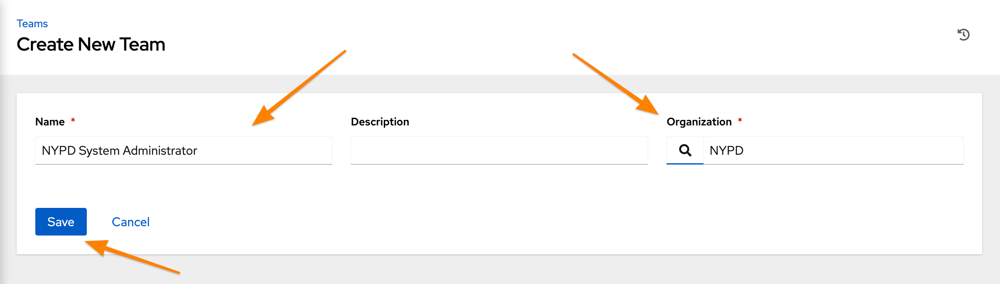
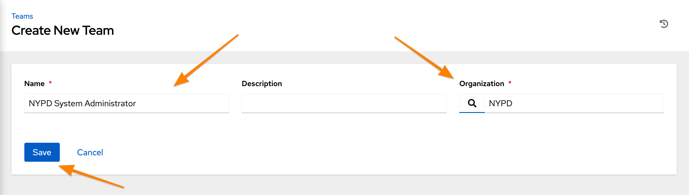
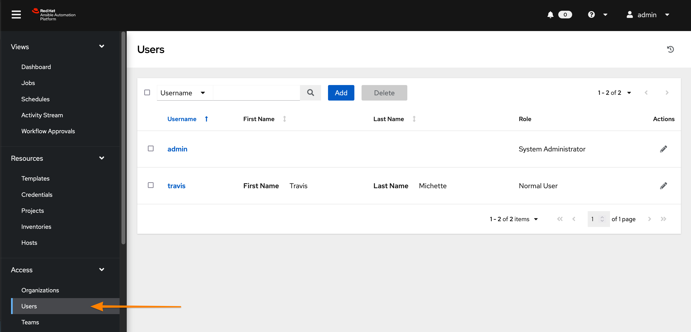
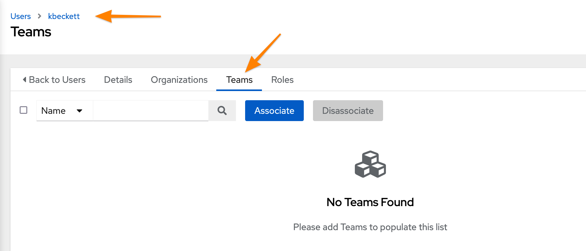
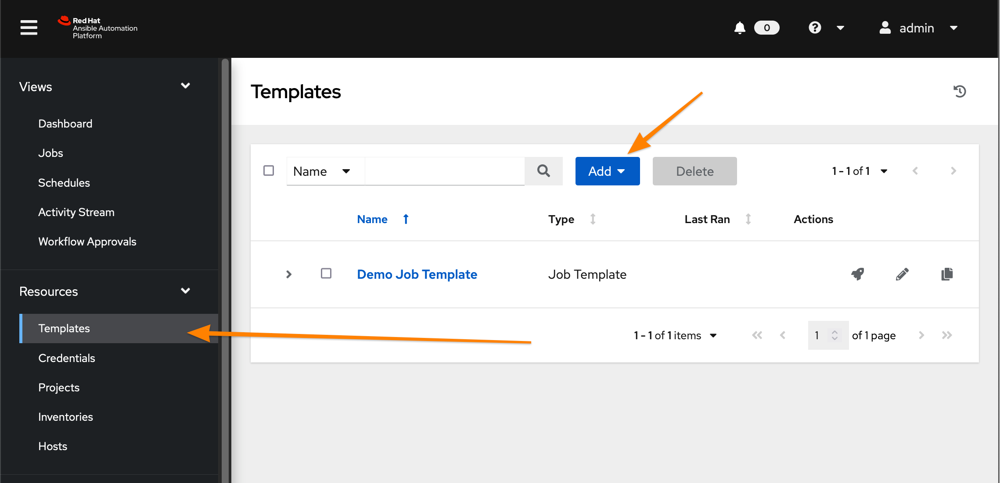
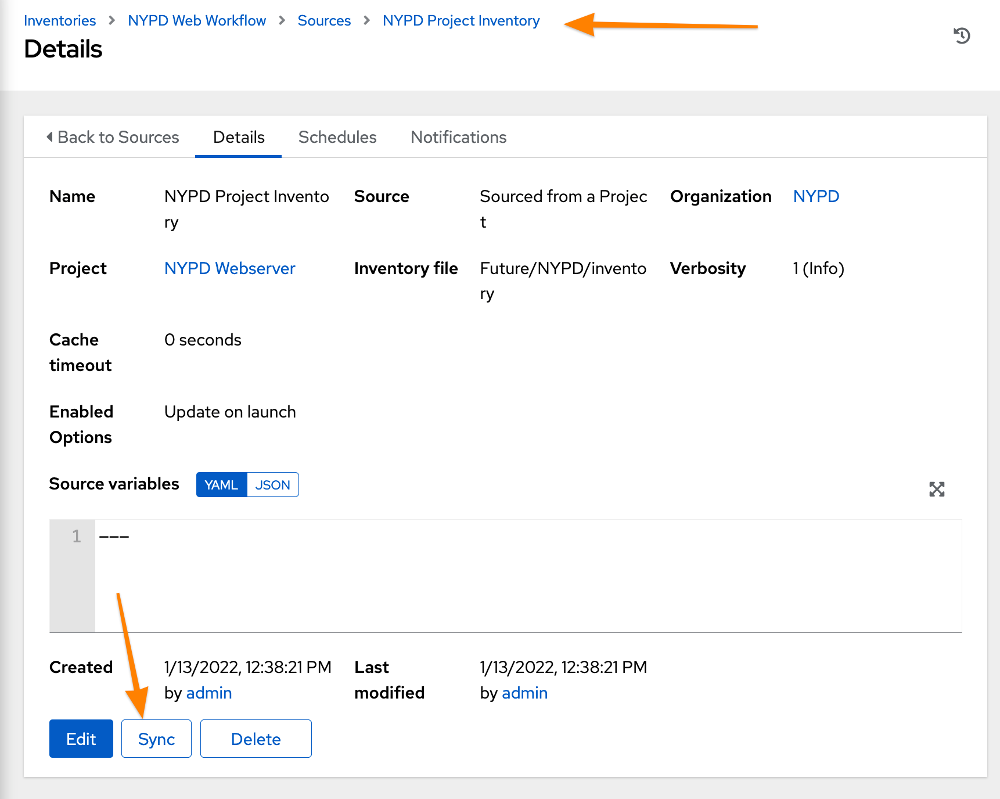
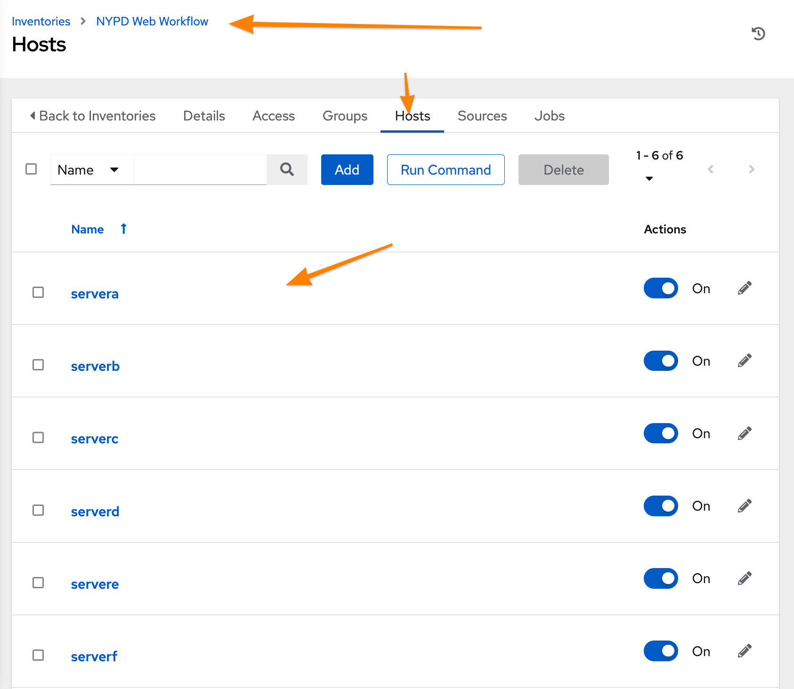
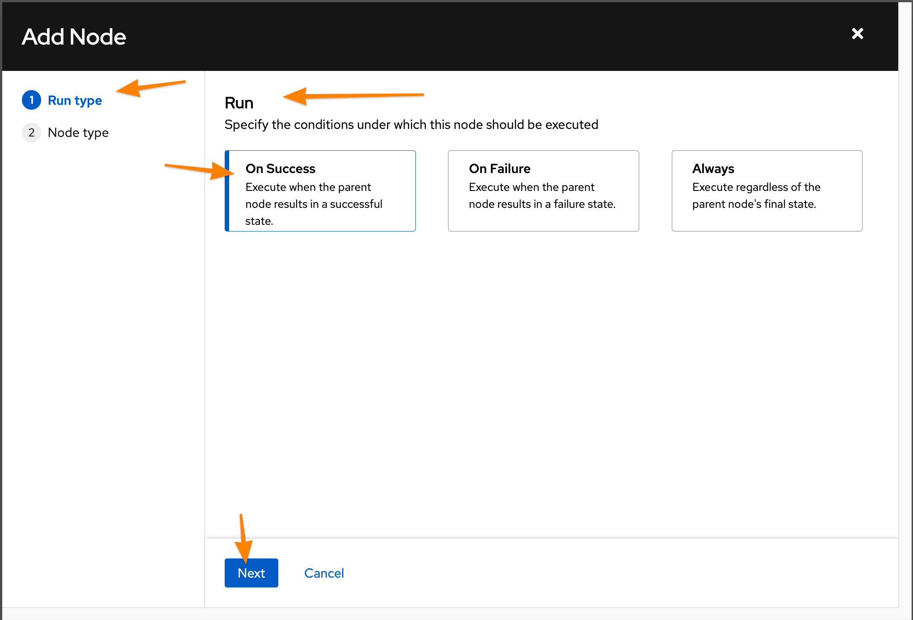
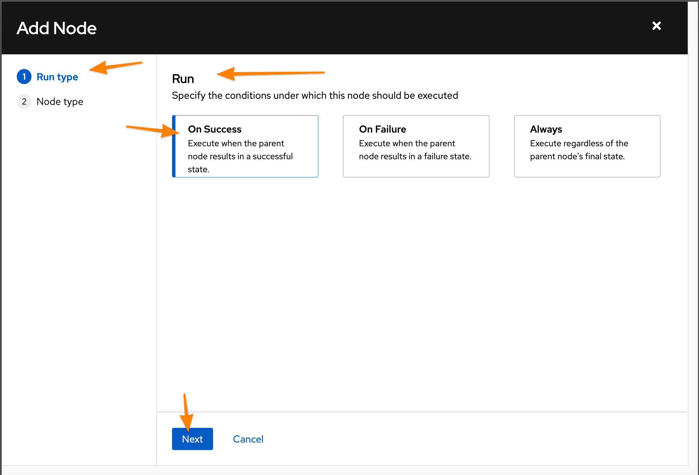
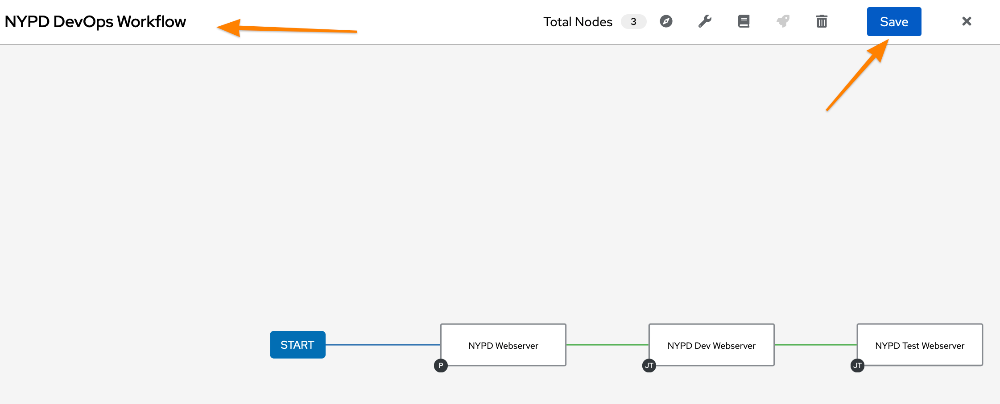

Introduction to Ansible Automation
1. Ansible & Ansible Automation Engine (Past)
1.1. Ansible Infrastructure
The Ansible infrastructure and Ansible Automation consists of multiple components. The initial main foundation of Ansible is the Ansible Automation Engine.
For the most part, Ansible is a declarative automation platform that is considered idempotent meaning that Ansible will only execute tasks and plays if the item needs to be changed/modified. Otherwise, Ansible will skip to the next task or play in a playbook.
-
Control Node: System with Ansible installed, contains Ansible inventory files, ansible.cfg, and playbooks. This system manages and controls other managed hosts/nodes.
-
Managed Host/Managed Node: System or node being managed in the Ansible environment. The Control Node executes various Ansible modules against these devices.

-
Inventory
-
Command-Line Interface (CLI)
-
Modules (Generally Python/Powershell)
-
Plugins
Ansible Automation Engine utilizes the ansible command for Ad-Hoc Ansible Automation or the ansible-playbook command for running multiple tasks by leveraging and Ansible playbook containing one or more plays consisting of one or more tasks.
1.1.1. Inventory
List of systems in the infrastructure to be managed. Inventories can be static, dynamic, or a combination of both static and dynamic. Ansible also allows inventories to contain variables for the devices being managed. Devices must exist in inventory in order for Ansible to be capable of managing the devices.
1.1.2. Modules
Code utilized by the Ansible core engine which is used to perform a given tasks. Most modules are written in Python for Linux and Powershell for Windows. Modules can extend Ansible automation to multiple platforms simplifying and extending the automation to the entire stack.
|
Non-Idempotent Modules
There are some Ansible modules that aren’t idempotent. Modules such as commmand, shell, and raw to name a few will execute regardless of the state. It is possible to use these modules with logic to make a playbook idempotent, but it is recommended to find an actual Ansible module to perform the task. These modules should be used as a last resort when no other module exists to perform a task. |
1.1.3. Plugins
Code utilized by the Ansible core engine which is used to manipulate, transform, or otherwise modify either data in the playbook or items captured by the playbook and modules so that it is adaptable and usable on different platforms.
1.1.4. Playbooks
List of sequential tasks to allowing individual Ansible modules to be executed to perform a sequence of steps in an automation task. Playbooks are written in YAML and are simple easy-to-read steps on the end state of the system.
1.1.5. Ansible Tower
Ansible Tower delivers enterprise management and features to the Ansible family. Through Tower, Ansible can provide the following:
-
Role-Based Access Control (RBAC)
-
Restful API
-
Push button deployment
-
Workflows
-
Credential and Secret Management
-
Integration into SCM systems
-
Integration into other management systems for dynamic inventory
-
WebUI
-
… and more
Ansible Tower allows enterprises to manage their IT environment by providing a centralized web solution to end-users and administrators to perform automation and self-service tasks. :pygments-style: tango :source-highlighter: pygments :icons: font :icons: font
1.2. Ansible Inventory, Ansible Config File, and Ansible Ad-Hoc Commands
1.2.1. Ansible Inventory
Ansible inventories can be either static, dynamic, or a combination of both static and dynamic. The traditional form of the Ansible inventory file is either YAML or INI. Inventory items consist of either individual managed nodes or groups of managed nodes.
servera (1)
serverb
serverc
serverd
[load_balancers] (2)
servere
serverf| 1 | Individual managed host/node |
| 2 | Inventory Group |
|
Converting INI to YAML Inventory
Ansible provides the ansible-inventory command that will easily allow the inventory to be transformed from one form to another. |
all:
children:
load_balancers: (1)
hosts:
servere: {}
serverf: {}
ungrouped:
hosts: (2)
servera: {}
serverb: {}
serverc: {}
serverd: {}| 1 | Inventory Hosts in a Group |
| 2 | Individual managed host/node (ungrouped) |
1.2.1.1. Inventory Variables
It is possible for Ansible playbooks and Ansible ad-hoc commands to utilize inventory variables. These variables can be defined directly within the static inventory files themselves or those variables can be defined within the directory structure of the project utilizing either project directories or inventory directories.
|
Keep Inventory Simple and Organized
It is extremely important not to define variables for inventory in multipe locations as variable precedence and variable merging comes into play. It is equally important to devise an inventory strategy on where/how variables will be defined so that the playbooks and automation goals are kept simple and easy to understand and follow. |
[app1srv]
appserver01 ansible_host=10.42.0.2 (1)
appserver02 ansible_host=10.42.0.3
[web]
node-[1:30] ansible_host=10.42.0.[31:60]
[web:vars] (2)
apache_listen_port=8080
apache_root_path=/var/www/mywebdocs/
[all:vars] (3)
ansible_user=kev
ansible_ssh_private_key_file=/home/kev/.ssh/id_rsa| 1 | Defined variable at a host level |
| 2 | Defined variables at a group level |
| 3 | Defined variables for all inventory items |
1.2.2. Ansible Config
The ansible.cfg file controls how the ansible and ansible-playbook commands are run and interpreted. The configuration file has two (2) main sections that are commonly used, but include other sections as well. For the purpose of understanding how Ansible works, we will examine both the [defaults] section and the [privilege_escalation] section.
[defaults]
inventory = inventory (1)
remote_user = devops (2)| 1 | Specifies which inventory file Ansible will use |
| 2 | Specifies the remote user to be used by ansible or ansible-playbook commands. |
|
A perfectly acceptable ansible.cfg might only have a [defaults] section specifying the inventory to be used. |
[privilege_escalation]
become = False (1)
become_method = sudo (2)
become_user = root (3)
become_ask_pass = False (4)| 1 | Sets default behavior whether to elevate privileges |
| 2 | Sets method for privilege escalation |
| 3 | Sets username of privileged user |
| 4 | Sets option on whether or not user is prompted for password when perfoming privilege escalation. |
-
ANSIBLE_CONFIG - Environment Variable (highest)
-
ansible.cfg - Config file in current working directory (most common and recommended)
-
~/.ansible.cfg - Ansible config file in the home directory
-
/etc/ansible/ansible.cfg - Ansible’s installed default location (lowest)
1.2.3. Ansible Ad-Hoc Commands
Ansible Ad-Hoc commands are most often used to quickly perform an automation task using a single Ansible module. These commands can be executed against one or more hosts in the Ansible inventory file.
| Command Argument | Description |
|---|---|
-m MODULE_NAME |
Module name to execute for the ad-hoc command |
-a MODULE_ARGS |
Module arguments needed for the ad-hoc command |
-b |
Runs ad-hoc command as a privileged user |
-K |
Runs ad-hoc command as a privileged user and requests the become password |
-e EXTRA_VARS |
Provides extra variables as KEY=VALUE to be used for the execution of the ad-hoc command |
1.2.4. DEMO - Ansible Ad-Hoc Commands
Demonstration and hands-on workshop for Ad-Hoc commands. The demo will utilize the ping module to ensure that the ansible.cfg and the inventory file are correctly setup and working within the Ansible environment.
-
Change to correct directory
[student@workstation ~]$ cd /home/student/Github/AAP_Webinar/Past/ad-hoc -
Run the ansible ad-hoc command
[student@workstation ad-hoc]$ ansible -m ping all servere | SUCCESS => { "ansible_facts": { "discovered_interpreter_python": "/usr/libexec/platform-python" }, "changed": false, "ping": "pong" } servera | SUCCESS => { "ansible_facts": { "discovered_interpreter_python": "/usr/libexec/platform-python" }, "changed": false, "ping": "pong" } serverc | SUCCESS => { "ansible_facts": { "discovered_interpreter_python": "/usr/libexec/platform-python" }, "changed": false, "ping": "pong" } serverb | SUCCESS => { "ansible_facts": { "discovered_interpreter_python": "/usr/libexec/platform-python" }, "changed": false, "ping": "pong" } serverd | SUCCESS => { "ansible_facts": { "discovered_interpreter_python": "/usr/libexec/platform-python" }, "changed": false, "ping": "pong" } serverf | SUCCESS => { "ansible_facts": { "discovered_interpreter_python": "/usr/libexec/platform-python" }, "changed": false, "ping": "pong" }
|
Checking Sudoers Ability and Setup
Listing 6. Checking ansible.cfg for Ability to BECOME without sudo Password
Listing 7. Checking ansible.cfg for Ability to BECOME with sudo and Prompting for Password
|
The next demonstration will use the copy module to create a user in the managed systems making an entry to the sudoers file.
-
Change to correct directory
[student@workstation ~]$ cd /home/student/Github/AAP_Webinar/Past/ad-hoc -
Run the ansible commands to create the user and update the sudoers file.
-
Create the user on the remote system.
[student@workstation ad-hoc]$ ansible -m user -a 'name=travis uid=1040 comment="Travis Michette" group=wheel' servera -b servera | SUCCESS => { "ansible_facts": { "discovered_interpreter_python": "/usr/libexec/platform-python" }, "append": false, "changed": false, "comment": "Travis Michette", "group": 10, "home": "/home/travis", "move_home": false, "name": "travis", "shell": "/bin/bash", "state": "present", "uid": 1040 } -
Create the user in a sudoers file.
[student@workstation ad-hoc]$ ansible -m copy -a 'content="travis ALL=(ALL) NOPASSWD:ALL" dest=/etc/sudoers.d/travis' servera -b
-
-
Test new user and sudo rights
-
SSH to servera
[student@workstation ad-hoc]$ ssh travis@servera -
sudo without a password
[travis@servera ~]$ sudo -i [root@servera ~]#
-
1.3. Ansible Playbooks
Ansible playbooks contain one or more tasks to execute against specified inventory nodes. Playbooks consist of one or more play and each play in a playbook consists of one or more tasks. Ansible playbooks and tasks are all about key:value pairs and lists. Understanding this basic format allows someone developing Ansible to form playbooks that are easier to create, troubleshoot/debug, and for someone else to understand.
1.3.1. Playbook Basics
An Ansible playbook is written/formatted in YAML so horizontal whitespace is critical and often the most troublesome part of debugging new Ansible playbooks. Playbooks have a general structure for the plays with directives such as: name, hosts, vars, tasks, and more. These play-level directives help form a readable structure much like task-level directives.
---
- name: install and start apache (1)
hosts: web (2)
become: yes (3)
tasks: (4)| 1 | Name of play in playbook |
| 2 | List of hosts from inventory to execute play against (required) |
| 3 | Directive to override ansible.cfg and elevate privileges |
| 4 | Beginning of tasks section. |
There can be other directives here, but at the most basic playbook, you will generally always see a hosts and a tasks section.
|
Naming Plays
It is recommended and considered a best practice to name all plays within a playbook. |
The first indentation level in a playbook denoted by - is the list of plays and this level will contain the key:value pairs that correspond to Ansible playbook directives. Understanding this and developing good habits and standards for indentations allows Ansible users to create playbook skeletons which help tremendously during the development/debugging cycle.
1.3.1.1. Task Structure
A task within a playbook is generally specified similar to a play having a name section so that it is easier to debug.
tasks:
- name: httpd package is present (1)
yum: (2)
name: httpd (3)
state: latest (4)
- name: latest index.html file is present (5)
template:
src: files/index.html
dest: /var/www/html/
- name: httpd is started (6)
service:
name: httpd
state: started| 1 | Name of first task in playbook |
| 2 | Name of module to be used in first task in playbook |
| 3 | Argument/Option provided to module, in this instance name and is required for the package name in the case of the yum module. |
| 4 | Argument/Option provided to module, in this instance the state describes whether the module will install, update, or remove the package for the yum module. |
| 5 | Name of second task in playbook |
| 6 | Name of third task in playbook |
|
Naming Tasks
It is recommended and considered a best practice to name all tasks within a playbook. Naming tasks especially helps with debugging issues in playbooks as the Ansible STDOUT will display and record task names. |
The second indentation level in a playbook denoted by - is generally under the tasks: section and contains the list of tasks. This level will contain the key:value pairs that correspond to Ansible task directives always starting with the module being used at the same level before going to the third indentation level which are the key:value pair options that belong to the module being used in that task.
1.3.2. Running Playbooks
Playbooks can be run just like Ansible ad-hoc commands. In order to execute or run a playbook, it is necessary to use the ansible-playbook command and specify the playbook. The additional options available for the ad-hoc commands such as: -e, -K, -b, and others all still apply and perform the same functions when leveraged with the ansible-playbook command.
1.3.3. DEMO - Running Ansible Playbooks
In this demonstration, we will be creating a user on serverb using playbooks as opposed to leveraging ad-hoc commands.
-
Switch to correct directory
[student@workstation ~]$ cd ~/Github/AAP_Webinar/Past/Playbooks -
Examine playbook
[student@workstation Playbooks]$ vim playbook.yml --- - name: Playbook to Create User and Sudoers without Password hosts: serverb tasks: - name: Create User Named Travis user: name: travis uid: 1040 comment: "Travis Michette" group: wheel - name: Create User in Sudoers File copy: content: "travis ALL=(ALL) NOPASSWD:ALL\n" dest: /etc/sudoers.d/travis validate: /usr/sbin/visudo -csf %s -
Execute and run the playbook
[student@workstation Playbooks]$ ansible-playbook playbook.yml -b PLAY [Playbook to Create User and Sudoers without Password] ************************** ... OUTPUT OMITTED ... -
Test and Verify User
-
SSH to remote system
[student@workstation Playbooks]$ ssh travis@serverb -
Verify Sudo without Password
[travis@serverb ~]$ sudo -i [root@serverb ~]#
-
It is important to constantly test playbooks with the most current and recent versions of Ansible to ensure all modules work as expected and items haven’t been deprecated. The following playbook was developed for use with Ansible 2.8 and earlier. The playbook now fails as some of the modules being used have been migrated from Ansible built-in modules to Ansible collections. More on this migration and discussion of collections will come in future chapters and sections.
-
Examine Playbook for Website
[student@workstation Playbooks]$ cat Website_Past.yml --- - name: Playbook to Fully Setup and Configure a Webserver hosts: servera tasks: - name: Install Packages for Webserver yum: name: - httpd - firewalld state: latest - name: Create Content for Webserver copy: content: "I'm an awesome webserver" dest: /var/www/html/index.html - name: Create Content for Webserver copy: content: "I'm an awesome webserver" - name: Firewall is Enabled service: name: firewalld state: started enabled: true - name: HTTP Service is Open on Firewall firewalld: service: http state: enabled permanent: true immediate: yes - name: httpd is started systemd: name: httpd state: started enabled: true -
Execute the playbook
[student@workstation Playbooks]$ ansible-playbook Website_Past.yml ERROR! couldn't resolve module/action 'firewalld'. This often indicates a misspelling, missing collection, or incorrect module path. (1) The error appears to be in '/home/student/Github/AAP_Webinar/Past/Playbooks/Website_Past.yml': line 27, column 7, but may be elsewhere in the file depending on the exact syntax problem. The offending line appears to be: - name: HTTP Service is Open on Firewall ^ here1 The firewalld module is not available. This was moved in AAP 2.x to an Ansible collection and is no longer able to be referenced without the collection and module being installed.
|
Test Often
As Ansible has changed going into Ansible Automation Platform 2+, many changes have been made. There was a duplication and mapping of several of the modules allowing for existing playbooks to still run correctly, however, at some point modules become completely deprecated, and mappings get removed. It is extremely important to execute old playbooks and test with new versions of Ansible and to look for deprecation warnings so that playbooks can be fixed proactively instead of reactively. |
1.4. Ansible Roles
Ansible Roles allow Ansible developers to create re-usable code snippets and tasks that can be shared in the form of Ansible Roles. These roles are commonly shared via Ansible Galaxy (https://galaxy.ansible.com/) via Github projects by the role developers. With the new Ansible Automation Platform (AAP) 2.x and beyond roles are also included as part of Ansible Collections which will be covered as part of a later topic.
1.4.1. Ansible Role Overview
Ansible roles are resusable Ansible components that allow common tasks to be repeated/repurposed without needing to re-write or create custom playbooks. Ansible roles work the same way as Ansible Playbooks and tasks except that roles are generally published/shared generically to be used by others to perform a task or set of tasks in automation playbooks.
Roles provide Ansible with a way to load tasks, handlers, and variables from external files. Static files and templates can also be associated and referenced by a role.
-
Roles group content which allows easy sharing of code with others
-
Roles can be written that define the essential elements of system type: web server, database server, git repository, or other purpose
-
Roles make larger projects more manageable
-
Roles can be developed in parallel by different administrators
| Subdirectory | Function |
|---|---|
defaults |
The main.yml file in this directory contains the default values of role variables that can be overwritten when the role is used. |
files |
This directory contains static files that are referenced by role tasks. |
handlers |
The main.yml file in this directory contains the role’s handler definitions. |
meta |
The main.yml file in this directory defines information about the role, including author, license, platforms, and optional role dependencies. |
tasks |
The main.yml file in this directory contains the role’s task definitions. |
templates |
This directory contains Jinja2 templates that are referenced by role tasks. |
tests |
This directory can contain an inventory and test.yml playbook that can be used to test the role. |
vars |
The main.yml file in this directory defines the role’s variable values. |
-
Role variables are defined by creating var/main.yml with name/value pairs in the role directory heirarchy.
-
Default variables are defined by creating a defaults/main.yml file with name/value pairs in the role directory heirarchy.
| It is best to define a given variable in either var/main.yml or defaults/main.yml but not both. |
| Playbook Roles and Include Statements: http://docs.ansible.com/ansible/playbooks_roles.html |
|
Reference for Roles
There is another workshop with some information on creating and publishing Ansible Roles. |
1.4.2. Using Roles
In order to use Ansible roles, they must first be installed and made available on the Ansible control node utilizing the role.
$ ansible-galaxy install tmichett.deploy_packages1.4.3. DEMONSTRATION - Using Roles
-
Change to correct working directory
[student@workstation ~]$ cd ~/Github/AAP_Webinar/Past/Roles/ -
Install Role from Ansible Galaxy
[student@workstation Roles]$ ansible-galaxy install -r roles/requirements.yml -p roles Starting galaxy role install process - downloading role 'ansiblize', owned by tmichett - downloading role from https://github.com/tmichett/Ansiblize/archive/master.tar.gz - extracting tmichett.ansiblize to /home/student/Github/AAP_Webinar/Past/Roles/roles/tmichett.ansiblize - tmichett.ansiblize (master) was installed successfully -
Install Collections
[student@workstation Roles]$ ansible-galaxy collection install -r collections/requirements.yml -p collections/ Starting galaxy collection install process [WARNING]: The specified collections path '/home/student/Github/AAP_Webinar/Past/Roles/collections' is not part of the configured Ansible collections paths '/home/student/.ansible/collections:/usr/share/ansible/collections'. The installed collection won't be picked up in an Ansible run. Process install dependency map Starting collection install process Downloading https://galaxy.ansible.com/download/ansible-posix-1.3.0.tar.gz to /home/student/.ansible/tmp/ansible-local-37837_73lx2j8/tmpnadbl_rx/ansible-posix-1.3.0-xr73p6ye Installing 'ansible.posix:1.3.0' to '/home/student/Github/AAP_Webinar/Past/Roles/collections/ansible_collections/ansible/posix' ansible.posix:1.3.0 was installed successfullyBecause we are using a newer Ansible version, the regular modules are no longer available so we must install the Ansible Posix collection to use some of the modules in the role.
-
Create/Modify Playbook with Correct Values and Providing Variables for the Role
[student@workstation Roles]$ cat Roles_Playbook_Demo.yml --- - name: Playbook to Fully Setup and Configure a new User with a Role hosts: serverc vars: (1) ansible_user_name: travis ansible_user_password: redhat ssh_key_answer: no roles: (2) - tmichett.ansiblize1 Providing required variables for the role 2 Providing the role being used -
Run the playbook with the ansible-playbook Command
[student@workstation Roles]$ ansible-playbook Roles_Playbook_Demo.yml -b -
Test the results on serverc
-
SSH to ServerC
[student@workstation Roles]$ ssh travis@serverc -
Attempt to become root without password
[travis@serverc ~]$ sudo -i [root@serverc ~]#
-
2. Ansible Automation Platform 1.x (Present)
2.1. Ansible Automation Hub
Ansible Automation hub was released so that enterprises could host their own Ansible collections, Ansible execution environments in a disconnected fashion. Ansible Automation Hub provides self-hosted services from Ansible Galaxy as well as services provided by Red Hat’s Ansible Automation Hub found at https://console.redhat.com/ansible/ansible-dashboard.
2.1.1. Ansible Automation Platform
Provides curated collections, modules, roles that are supported by Red Hat or Red Hat Partners. The collections, modules, roles, and playbooks downloaded from Red Hat Automation Hub are supported and required an Ansible Automation Platform subscription entitlement. This is different from the unsupported community modules/collections/roles found at Ansible Galaxy (https://galaxy.ansible.com/). :pygments-style: tango :source-highlighter: pygments :icons: font :icons: font
2.2. Ansible Collections
Ansible 2.9 introduced the concept of collections and provided mapping for Ansible modules that were moved into a collection namespace. Ansible 2.9 provided a mapping of the new module locations in collections and this mapping automatically works for existing Ansible playbooks in the initial versions of Ansible Automation Platform.
|
Ansible Module and Collection Mapping
|
2.2.1. Using Ansible Automation Platform Collections
Collections allowed development of Ansible core components to be separated from module and plug-in development. Upstream Ansible unbundled modules from Ansible core code beginning with Ansible Base (core) 2.10/2.11. Newer versions of Ansible require collections to be installed in order for modules to be available for Ansible. Playbooks should be developed using the FQCNs when referring to modules in tasks. Existing playbooks can be fixed easily to work with collections, but it is better to re-write the playbooks to use the fully-qualified collection name (FCQN).
|
Downloading Collections
Collections are brought into the entire structure via three ways: Requirements files next to your playbooks describe what collections should be present for the automation-content at hand. Automation controller can read those, or searches to Private Automation hub automatically for needed collections and pull them automatically. There is also a CLI for downloading collections. |
2.3. Demonstration - Ansible Collections
-
Change to the correct working directory
[student@workstation ~]$ cd /home/student/Github/AAP_Webinar/Present/Playbooks -
View the Playbook
[student@workstation Playbooks]$ vim Website_Present.yml --- - name: Playbook to Fully Setup and Configure a Webserver hosts: servera tasks: - name: Install Packages for Webserver yum: name: - httpd - firewalld state: latest - name: Create Content for Webserver copy: content: "I'm an awesome webserver\n" dest: /var/www/html/index.html - name: Firewall is Enabled systemd: name: firewalld state: started enabled: true - name: HTTP Service is Open on Firewall ansible.posix.firewalld: (1) service: http state: enabled permanent: true immediate: yes - name: httpd is started systemd: name: httpd state: started enabled: true1 In the newer version of Ansible the firewalld module is located in the ansible.posix.firewalld collection. Beginning with Ansible version 2.9 collections contain modules that were previously included as part of Ansible core. Ansible version 2.9.x contains mapping for modules in their collections and Ansible version 2.9 also includes all the collections as part of the Ansible Core distribution. Never versions of Ansible however, don’t have the collection mapping nor are the modules and collections pre-installed so it is necessary to install collections.
Ansible Module Mapping: https://github.com/ansible/ansible/blob/devel/lib/ansible/config/ansible_builtin_runtime.yml
-
Install the Ansible Collections
[student@workstation Playbooks]$ ansible-galaxy collection install -r collections/requirements.yml -p collections/Since we are using collections, it is very important to install the collections before attempting to run the playbook. Collections are typically installed into the local project directory called collections and they are usually listed in a requirements.yml file.
-
Execute the playbook with the ansible-playbook command
[student@workstation Playbooks]$ ansible-playbook Website_Present.yml -b -
Test the Website
[student@workstation Playbooks]$ curl servera I'm an awesome webserver
3. Ansible Automation Platform 2.x (Future)
3.1. Introduction to AAP 2.x Components
With Ansible 2.x, many new items have emerged. Ansible can now leverage execution environments which contain Ansible collections, different versions of Ansible, and the correct python versions and modules needed to execute a playbook. Ansible Execution Environments (EEs) allow developers and administrators more flexibility be leveraging a containerized Ansible environment. The use of Ansible EEs from a control node or developer workstation will work exactly the same with Ansible Controller (formerly known as Ansible Tower). Ansible Controller allows Ansible EEs to be assigned to projects, inventories, job templates, and more.
Ansible Private Automation Hub (Automation Hub) allows a self-hosted Ansible Galaxy. The local installation of Ansible Galaxy not only allows collections to be published privately within an organization, but it also provides a container registry for publishing custom Ansible EEs.
Ansible Content Navigator is a new tool that can be used to test and develop Ansible playbooks.
3.1.1. Ansible Content Navigator
The ansible-navigator tool replaces and extends the functionality of the ansible-playbook, ansible-inventory, ansible-config commands and more. Ansible Content Navigator allows the Ansible Control Node to be separated from the execution environment as playbooks are now run in a container. This makes it easier to move from development environments to production environments as the execution environment is now a portable container.

Ansible Content Navigator is works very similar to ansible and ansible-playbook commands as it relies on a configuration file. The ansible-navigator.yml file utilizes the ansible.cfg file and further provides customizations for configurations on developing, testing, and running playbooks in your Ansible project. Some of the most critical components of Ansible Navigator are the following:
-
ANSIBLE_CONFIG: Specifies Ansible configuration file to use
-
image: Specifies Ansible Execution Environment (EE) to be used
---
ansible-navigator:
execution-environment: (1)
enabled: true
environment-variables:
set:
ANSIBLE_CONFIG: ansible.cfg (2)
image: hub.lab.example.com/ee-29-rhel8:latest (3)
logging:
level: critical
mode: stdout (4)| 1 | Configures Ansible Navigator to use an Execution Environment (EE) |
| 2 | Specifies where Ansible Navigator and the Ansible EE will receive Ansible configuration settings |
| 3 | Specifies Ansible EE to use for Ansible Navigator |
| 4 | Specified Mode, in this case, we are using STDOUT so that the output will look like it does with the ansible-playbook command. |
Most ansible commands have a corresponding ansible-navigator command. The table below provides a mapping for the most commonly used commands.
| Ansible Command | Automation Content Navigator Subcommands |
|---|---|
ansible-config |
ansible-navigator config |
ansible-doc |
ansible-navigator doc |
ansible-inventory |
ansible-navigator inventory |
ansible-playbook |
ansible-navigator run |
3.1.2. Ansible Execution Environments
Ansible Execution Environments (EEs) are containers which consist of:
-
Ansible Core
-
Ansible Content Collections
-
Python Libraries
-
Executables
-
Other dependencies for running the playbook
Custom execution environments can be built and created with ansible-builder. The process of creating a new Ansible EE depends on if there is a valid Ansible Automation Entitlement associated with your account. If you are using the free version of Ansible, base container images MUST come from Quay.IO as the Red Hat Ansible Execution Environments (EEs) cannot be used or redistributed.
Ansible Execution Environments (EEs) are containers which require:
-
Configugration Files (ansible.cfg)
-
Inventory
-
SSH
-
SSH Keys (requires SSH Agent Service)
-


|
Default Versions of Ansible and Execution Environments
Ansible Automation Platform 2 provides Ansible Core 2.11 as well as several Red Hat Certified Content Collections providing a similar experience to Ansible 2.9. A benefit of execution environments is that they can be used to run older versions of Ansible. Some of the demos in this webinar will use an Ansible EE based on Ansible 2.9 so that collection mapping is done automatically and older playbooks don’t need to be touched. |
|
SSH Keys
SSH Agent is used to allow the SSH keys to pass through to the Ansible Execution Environment (EE) which is a container with all the Ansible and Python components required to run the Ansible Automation tasks. Listing 12. Passing SSH Keys to Execution Environments
|
3.1.3. DEMO - Using Ansible Content Navigator and Ansible Execution Environments
-
Change to correct directory
[student@workstation ~]$ cd /home/student/Github/AAP_Webinar/Future/Navigator -
View configuration for Ansible Content Navigator
[student@workstation Navigator]$ cat ansible-navigator.yml --- ansible-navigator: execution-environment: enabled: true environment-variables: set: ANSIBLE_CONFIG: ansible.cfg (1) image: hub.lab.example.com/ee-29-rhel8:latest (2) logging: level: critical mode: stdout (3)1 Ensure it is pointing to the project ansible.cfg 2 Ensure we are using the Ansible EE based on Ansible version 2.9.x for compatibility of existing playbooks (pre-collections). 3 Ensure mode is specified as stdout so that the output can easily be viewed from the command-line (CLI). -
View the playbook
[student@workstation Navigator]$ cat Website_Ansible_Past.yml --- - name: Playbook to Fully Setup and Configure a Webserver hosts: servere tasks: - name: Install Packages for Webserver yum: name: - httpd - firewalld state: latest - name: Create Content for Webserver copy: content: "I'm an awesome webserver for the NYPD and I know Castle!! \n" dest: /var/www/html/index.html - name: Firewall is Enabled service: name: firewalld state: started enabled: true - name: HTTP Service is Open on Firewall firewalld: service: http state: enabled permanent: true immediate: yes - name: httpd is started systemd: name: httpd state: started enabled: true -
Setup and ensure SSH keys are shared for the Ansible EE
[student@workstation ~]$ eval $(ssh-agent) (1) [student@workstation ~]$ ssh-add ~/.ssh/lab_rsa (2)1 Starts SSH Agent service 2 Loads SSH key to the SSH Agent Service keyring -
Run the playbook with ansible-navigator run Command
[student@workstation Navigator]$ ansible-navigator run Website_Ansible_Past.yml -b (1) ------------------------------------------------------------------------- Execution environment image and pull policy overview ------------------------------------------------------------------------- Execution environment image name: hub.lab.example.com/ee-29-rhel8:latest ... OUTPUT OMITTED ... TASK [httpd is started] ******************************************************** changed: [servere] PLAY RECAP ********************************************************************* servere : ok=6 changed=4 unreachable=0 failed=0 skipped=0 rescued=0 ignored=01 Specify the -b to enable privilege escalation as the ansible.cfg and playbook doesn’t have escalation already enabled. -
Verify website is running
[student@workstation Navigator]$ curl servere I'm an awesome webserver for the NYPD and I know Castle!!
-
Explore Ansible Navigator
[student@workstation Navigator]$ ansible-navigator -m interactive 0│## Welcome ▒ 1│----------------------------------------------------------------------------------▒ 2│ ▒ 3│Some things you can try from here: ▒ 4│- `:collections` Explore available collec▒ 5│- `:config` Explore the current ansi▒ 6│- `:doc <plugin>` Review documentation for▒ 7│- `:help` Show the main help page ▒ 8│- `:images` Explore execution enviro ... OUTPUT OMITTED ... -
View information on Execution Environment (type :images)
NAME TAG EXECUTION ENVIRONMENT CREATED SIZE 0│ee-29-rhel8 (primary) latest True 2 months ago 785 MB 1│ee-supported-rhel8 2.0 True 2 months ago 1.07 GB 2│flamel latest False 5 weeks ago 1.56 GB -
View the ee-29-rhel8 EE (as this is the default defined in the configuration file) by typing 0
EE-29-RHEL8:LATEST (PRIMARY) DESCRIPTION 0│Image information Information collected from image inspection 1│General information OS and python version information 2│Ansible version and collections Information about ansible and ansible collections 3│Python packages Information about python and python packages 4│Operating system packages Information about operating system packages 5│Everything All image informatioInteractively Viewing Execution Environment DetailsOnce you’ve loaded Ansible Content Navigator and the EE, it’s possible to view the details of the Ansible versions and collections and any other information about the EE by pressing the corresponding number. To exit the ansible-navigator screens, just continue hitting the ESC key to exit to the various levels.
-
Run ansible-navigator with the -m interactive to override the STDOUT setting and look at Navigator interactively
[student@workstation Navigator]$ ansible-navigator run Website_Ansible_Past.yml -b -m interactive PLAY NAME OK CHANGED UNREACHABLFAILED SKIPPED IGNORED IN PROGRESTASK COUNT PROGRESS 0│Playbook t 2 0 0 0 0 0 1 3 ▇▇▇▇▇ -
Hit the 0 to view playbook output for Play 0
RESULT HOST NUMBER CHANGED TASK TASK ACTION DURATION 0│OK servere 0 False Gathering Facts gather_facts 1s 1│OK servere 1 False Install Packages for Webserver yum 1s 2│OK servere 2 False Create Content for Webserver copy 0s 3│OK servere 3 False Firewall is Enabled service 0s 4│OK servere 4 False HTTP Service is Open on Firewalfirewalld 0s 5│OK servere 5 False httpd is started systemd 0s -
Hit 5 to examine Task 5 from the playbook
PLAY [Playbook to Fully Setup and Configure a Webserver:5] *************************** TASK [httpd is started] ************************************************************** OK: [servere] 0│--- ▒ 1│duration: 0.521409 2│end: '2022-01-24T19:24:05.870450' 3│event_loop: null 4│host: serverd 5│play: Playbook to Fully Setup and Configure a Webserver 6│play_pattern: serverd 7│playbook: /home/student/Github/AAP_Webinar/Future/Navigator/Website_Ansible_Past.y 8│remote_addr: serverd 9│res: 10│ _ansible_no_log: false ... output omitted ...
|
Interactive Mode Details
When using Ansible Navigator in interactive mode it is possible to get a lot more details regarding each task in the play as well as details on the modules being used and other system settings/configurations. |
3.2. Introduction to AAP 2.x - Ansible Automation Hub
The Red Hat AAP 2.x platform provides Ansible Private Automation hub for those with valid subscription entitlements. Private Automation Hub provides two key features:
-
Place to publish Collections
-
Place to publish Execution Environments
This Private Automation Hub is essentially your local version (private version) of Ansible Galaxy and container registries.
3.2.1. Private Automation Hub
Private automation hub provides an on-site location for publishing collections and Ansible Execution Environments. This provides a centralized location for Automation Controller and for developers using Ansible Navigator to obtain EEs and content collections.


3.2.2. Custom Execution Environments
Building EEs is rather simple: we provide the tool execution environment builder, the CLI tool ansible-builder for this, which knows how to bring the pieces together in just the right way and create the EE. They can be published on Private Automation hub or in any container registry.


---
version: 1
build_arg_defaults:
EE_BASE_IMAGE: 'hub.lab.example.com/ee-minimal-rhel8:2.0' (1)
EE_BUILDER_IMAGE: 'hub.lab.example.com/ansible-builder-rhel8:2.0' (2)
dependencies:
galaxy: requirements.yml (3)
python: requirements.txt (4)
system: bindep.txt (5)| 1 | Defines base container image to be used for creating the EE |
| 2 | Defines the builder image to be used for the EE |
| 3 | Points to file containing the Collections and Roles to be installed and included in the EE |
| 4 | Points to file containing the required Python components to be installed and included in the EE |
| 5 | Points to file containing the system applications to be installed in the EE |
---
collections:
- name: /build/exercise.motd.tar.gz (1)
type: file (2)| 1 | Defines collections or roles to be included in the container image. |
| 2 | Defines type of collection or role. |
# Python dependencies
funmotd (1)| 1 | Defines Python dependencies needed to be installed on the container image. If multiple Python packages are needed, one package per line is required |
# System-level dependencies
hostname (1)| 1 | Defines system packages needed to be installed on the container image. If multiple packages are needed, one package per line is required. |
|
References
|
3.2.3. DEMO - Creating a Custom Execution Environment and Publishing to Private Automation Hub
-
Switch to correct directory
[student@workstation ~]$ cd /home/student/Github/AAP_Webinar/Future/Custom_EE/EE -
Install ansible-builder
[student@workstation EE]$ sudo yum install -y ansible-builderThe execution-environment.yml, requirements.yml, requirements.txt, and bindep.txt have already been created to save time. Normally these files would be created by the administrator creating the custom execution environment.
-
View or create the execution-environment.yml file
[student@workstation EE]$ cat execution-environment.yml --- version: 1 build_arg_defaults: EE_BASE_IMAGE: 'hub.lab.example.com/ee-minimal-rhel8:2.0' EE_BUILDER_IMAGE: 'hub.lab.example.com/ansible-builder-rhel8:2.0' dependencies: galaxy: requirements.yml python: requirements.txt system: bindep.txt -
View or create the requirements.yml File
[student@workstation EE]$ cat requirements.yml --- collections: - name: /build/exercise.motd.tar.gz type: file -
View or create the requirements.txt File
[student@workstation EE]$ cat requirements.txt # Python dependencies funmotd -
View or create the bindep.txt File
[student@workstation EE]$ cat bindep.txt # System-level dependencies hostname -
Run the ansible-builder create command to create the structure for the build process
[student@workstation EE]$ ansible-builder create Complete! The build context can be found at: /home/student/Github/AAP_Webinar/Future/Custom_EE/EE/contextThis is necessary so that we can copy the file exercise.motd.tar.gz to the correct directory so it will be mounted and available in the container image and build process.
-
View created files and directory structure
[student@workstation EE]$ tree context/ context/ ├── _build │ ├── bindep.txt │ ├── requirements.txt │ └── requirements.yml └── Containerfile 1 directory, 4 files -
Copy the exercise.motd.tar.gz to the context/_build location so it can be mounted properly
[student@workstation EE]$ cp collection-files/exercise.motd.tar.gz context/_build/ -
Create the ee-motd-demo Execution Environment Image
[student@workstation EE]$ ansible-builder build -t ee_aap_demo:latest Running command: podman build -f context/Containerfile -t ee_aap_demo:latest context Complete! The build context can be found at: /home/student/Github/AAP_Webinar/Future/Custom_EE/EE/context -
Verify container image was built using the podman images Command
[student@workstation EE]$ podman images REPOSITORY TAG IMAGE ID CREATED SIZE localhost/ee_aap_demo latest 3bfe381575fa 6 minutes ago 419 MB
-
Change to correct directory
[student@workstation ~]$ cd /home/student/Github/AAP_Webinar/Future/Custom_EE -
Ensure that ansible-navigator is using the correct Ansible Execution Environment
[student@workstation Custom_EE]$ cat ansible-navigator.yml --- ansible-navigator: execution-environment: enabled: true environment-variables: set: ANSIBLE_CONFIG: ansible.cfg image: localhost/ee_aap_demo:latest logging: level: critical mode: stdout -
Create or View Playbook
[student@workstation Custom_EE]$ cat Custom_EE_Playbook.yml --- - name: Playbook to Configure the Message of the Day with a Custom EE hosts: servera collections: - exercise.motd roles: - name: exercise.motd.banner -
Execute Playbook
[student@workstation Custom_EE]$ ansible-navigator run Custom_EE_Playbook.yml -b (1)1 The -b is placed on there to elevate priviliges. -
Test to see if the MOTD was deployed to the server
[student@workstation EE]$ ssh servere Activate the web console with: systemctl enable --now cockpit.socket This system is not registered to Red Hat Insights. See https://cloud.redhat.com/ To register this system, run: insights-client --register ================================================================================ ================================================================================ == == == This system is managed by Ansible. == == AAP2.0 == == == ================================================================================ ================================================================================ Last login: Tue Jan 25 16:17:04 2022 from 172.25.250.9
-
Change to correct directory
[student@workstation ~]$ cd /home/student/Github/AAP_Webinar/Future/Custom_EENot really needed as we are using the PODMAN commands to push images, but done for consistency.
-
Tag the image with the Podman command to prepare the push to hub.lab.example.com
[student@workstation EE]$ podman tag localhost/ee_aap_demo:latest hub.lab.example.com/aap-demo:latest -
Push the image to private automation hub
[student@workstation EE]$ podman push hub.lab.example.com/aap-demo:latest Getting image source signatures Copying blob 38345e1102be done Copying blob df2b2b67ec7f done Copying blob fa751636af06 done Copying blob a65a1b01a4d2 done Copying blob af092941766c done Copying blob efebe3fe0d93 done Copying blob 9c99e40eecd0 done Copying config 3bfe381575 done Writing manifest to image destination Storing signaturesRepository LoginIt might be necessary to perform a podman login for the remote container registry.
Listing 17. Regsitry Loginpodman login hub.lab.example.com -
Login to the Private Automation hub
 Figure 11. Automation Hub Login
Figure 11. Automation Hub Login -
Navigate to Container Registry and look for the aap-demo Container
 Figure 12. Automation Hub Login
Figure 12. Automation Hub Login -
Clean up servere and show that MOTD has been reset
[student@workstation Custom_EE]$ ansible-playbook MOTD_Cleanup.yml PLAY [Playbook to Cleanup MOTD for Testing Custom EE] ****************************************************************** TASK [Gathering Facts] ************************************************************************************************* ok: [servere] TASK [Reset MOTD] ****************************************************************************************************** changed: [servere] PLAY RECAP ************************************************************************************************************* servere : ok=2 changed=1 unreachable=0 failed=0 skipped=0 rescued=0 ignored=0[student@workstation Custom_EE]$ ssh servere Activate the web console with: systemctl enable --now cockpit.socket This system is not registered to Red Hat Insights. See https://cloud.redhat.com/ To register this system, run: insights-client --register I'm the clean MOTD Banner -
Test with the image coming from Private Automation Hub
[student@workstation Custom_EE]$ ansible-navigator run --pp always --eei hub.lab.example.com/aap-demo:latest -m stdout Custom_EE_Playbook.yml -b ---------------------------------------------------------------------- Execution environment image and pull policy overview ---------------------------------------------------------------------- Execution environment image name: hub.lab.example.com/aap-demo:latest Execution environment image tag: latest Execution environment pull policy: always Execution environment pull needed: True ---------------------------------------------------------------------- Updating the execution environment ---------------------------------------------------------------------- Trying to pull hub.lab.example.com/aap-demo:latest... Getting image source signatures Copying blob 3c9fdae16a64 skipped: already exists Copying blob 5c4402ce71c4 skipped: already exists Copying blob 69ebc448681d [--------------------------------------] 0.0b / 0.0b Copying blob 495ff1ef2828 [--------------------------------------] 0.0b / 0.0b Copying blob 80be453030cf [--------------------------------------] 0.0b / 0.0b Copying blob 642d458785a1 [--------------------------------------] 0.0b / 0.0b Copying blob 00fe5380b165 [--------------------------------------] 0.0b / 40.3MiB Copying config 3bfe381575 done Writing manifest to image destination Storing signatures 3bfe381575fa7606cb745bfe8227d0cbf59b4d91dc7bd7d811a1fcfe28022919 [student@workstation Custom_EE]$
3.3. Introduction to AAP 2.x - Ansible Controller (formerly Ansible Tower)
Ansible Controller is the replacement for Ansible Tower which consists of a web-based management interface providing multiple features for system automation. Ansible Controller provides the following:
-
WebUI
-
Centralized Dashboard
-
Centralized Logging/Auditing
-
Role-Based Access Control (RBAC)
-
User/Group (Team) Management
-
-
Inventory Management
-
Project Management (Integration with Version Control)
-
Credential Management
-
Workflow and Job Management
-
… and more
3.3.1. Organizations, Teams, and RBAC
3.3.1.1. DEMO - Creating Organizations, Teams, and Users
-
Login to Ansible Controller
 Figure 13. Ansible Controller Login
Figure 13. Ansible Controller Login -
Click Organizations
 Figure 14. Ansible Controller - Organizations
Figure 14. Ansible Controller - Organizations -
Click Add
 Figure 15. Ansible Controller - Adding an Organization
Figure 15. Ansible Controller - Adding an Organization -
Create the new organization with the appropriate details and then click Save
-
Name: Required for name of Organization
-
NYPD
-
-
Description: Optional but helpful
-
New York Police Department IT
-
-
Execution Environment: Default execution environment for playbooks, projects, and workflows in the environment.
-
Ansible Engine 2.9 execution environment (Selected for backwards compatibility)
 Figure 16. Ansible Controller - Configuring the OrganizationDefault Execution Environment
Figure 16. Ansible Controller - Configuring the OrganizationDefault Execution EnvironmentIt is helpful to setup the default execution environment (EE) which will control the running of Ansible playbooks within your Organization. It is possible for individual projects and playbooks to be selectively run with another execution environment, but the default EE will be used if another EE isn’t specified.
In the above example, the Ansible Engine 2.9 execution environment was selected as it has the best compatibility with older playbooks before the realigned modules and collections. Ansible Engine 2.9 can utilize collections, but also has the mapping for the Ansible modules allowing older playbooks to run without updating to using FQCN.
-
-
-
Click on Teams
 Figure 17. Ansible Controller - Creating a Team
Figure 17. Ansible Controller - Creating a Team -
Click Add and fill in appropriate values and then click Save
-
Name: Required for name of team
-
NYPD System Administrator
-
-
Organization: Required to select an existing organization from drop-down
-
Click magnifying glass and select Organization
-
NYPD
 Figure 18. Ansible Controller - Configuring a Team
Figure 18. Ansible Controller - Configuring a Team Figure 19. Ansible Controller - Selecting an OrganizationFigure 20. Ansible Controller - Completing Team Creation
Figure 19. Ansible Controller - Selecting an OrganizationFigure 20. Ansible Controller - Completing Team Creation
-
-
-
-
Click Users
Figure 21. Ansible Controller - Creating a User -
Click Add and fill in appropriate information and click Save
-
Username: kbeckett
-
Email: kbeckett@nypd.ny.gov
-
Password: redhat
-
First Name: Kate
-
Last Name: Beckett
-
Organization: NYPD
-
User Type: Normal User
Figure 22. Ansible Controller - Selecting an Organization Figure 23. Ansible Controller - Configuring a User
Figure 23. Ansible Controller - Configuring a User
-
Adding users to a team can be done multiple ways, but in this example, we will be modifying a recently created user and use the Teams option on the User Details tab.
-
Click on Teams
Figure 24. Ansible Controller - User Teams Menu -
Click the Associate button to search for and select a team, then click Save
-
NYPD System Administrator
 Figure 25. Ansible Controller - User Team(s) Selection
Figure 25. Ansible Controller - User Team(s) Selection
-
-
Verify user was associated with the correct team(s).
 Figure 26. Ansible Controller - User Team(s) Verification
Figure 26. Ansible Controller - User Team(s) Verification
|
Teams
Teams are used to group users together so that RBAC controls can be more easily managed at a group level versus an individual user level. It is still possible to give individual users additional privileges, but teams is the preferred way of permission management. |
3.3.2. Inventories and Credentials
3.3.2.1. DEMO - Creating Inventories and Credentials
-
Login to Ansible Controller
Figure 27. Ansible Controller Login -
Click Inventories and then click Add to Add an Inventory
 Figure 28. Ansible Controller - Inventory
Figure 28. Ansible Controller - Inventory -
Provide and inventory Name and Organization and then click Save
-
Name: NYPD Systems
-
Organization: NYPD
Figure 29. Ansible Controller - Selecting an Organization Figure 30. Ansible Controller - New Inventory
Figure 30. Ansible Controller - New Inventory
-
-
Add hosts to the inventory by clicking Hosts and then click Add
-
Name: serverd
 Figure 31. Ansible Controller - Managed Hosts in Inventory
Figure 31. Ansible Controller - Managed Hosts in Inventory
-
-
Provide the inventory hostname of the host and any host-based variables if desired and click Save. Repeat for multiple hosts.
 Figure 32. Ansible Controller - Adding a Host to Inventory
Figure 32. Ansible Controller - Adding a Host to Inventory
-
Click Credentials and then click Add to add a new credential
 Figure 33. Ansible Controller - Credentials
Figure 33. Ansible Controller - Credentials -
Create the credential specifying the name, type, and bind to organization if desired and click Save.
-
Name: NYPD Machine SSH Creds
-
Description: NYPD SSH UN and PW Credential
-
Organization: NYPD
-
Username: devops
-
Password: redhat
-
Privilege Escalation Method: sudo
-
Privilege Escalation Username: root
-
NOTE - SSH credentials are Machine Credentials
 Figure 34. Ansible Controller - Machine Credentials
Figure 34. Ansible Controller - Machine Credentials Figure 35. Ansible Controller - Credentials - Privileged UserPrivilege Escalation
Figure 35. Ansible Controller - Credentials - Privileged UserPrivilege EscalationIt is necessary to provide privilege escalation information as with Ansible Controller, this is where the information and configuration must come from for execution environments (EEs).
-
-
3.3.3. Projects and Job Templates
3.3.3.1. DEMO - Projects and Job Templates
|
Automatically Setup SCM/Git Credentials before Proceeding
You must run a playbook to setup the git credentials so that there are SCM credentials loaded into Ansible Controller prior to completing this demo. This also assumes that the ssh_ID_key has been copied to /tmp/github_id. The playbook and names may need to be modified for your user.
[student@workstation ~]$ cd /home/student/Github/AAP_Webinar/Future/Setup
|
-
Login to Ansible Controller
Figure 36. Ansible Controller Login -
Click Projects and then click Add to Add a Project
 Figure 37. Ansible Controller - Projects
Figure 37. Ansible Controller - Projects -
Create a New Project with a Name, Organization and Source Control Credential
-
Name: NYPD Webserver
-
Organization: NYPD
-
Source Control Credential Type: Git
-
Source Control URL: git@github.com:tmichett/AAP_Webinar.git
-
Source Control Credential: Travis Github
 Figure 38. Ansible Controller - Creating Project from Github Source
Figure 38. Ansible Controller - Creating Project from Github SourceAfter clicking Save it will initiate the first sync of the project resources. Wait for the sync to complete successfully.
-
-
Click Templates and then click Add to Add (*Add job template) to create a job template.
Figure 39. Ansible Controller - Job Templates -
Create the new job template and then click Save
-
Provide a name
-
Name: NYPD Webserver Deploy
-
-
Provide job type (run)
-
Provide Inventory
-
Inventory: NYPD Systems
-
-
Provide Project
-
Project: NYPD Webserver
-
-
Select Playbook
-
Playbook: Future/NYPD/Website_Ansible_Past.yml
-
-
Select Credentials
-
Credentials: NYPD Machine SSH Creds
-
-
Select Privilege Escalation option
 Figure 40. Ansible Controller - Job Template Details
Figure 40. Ansible Controller - Job Template Details Figure 41. Ansible Controller - Job Template Details cont.Privilege Escalation
Figure 41. Ansible Controller - Job Template Details cont.Privilege EscalationIt is important to know what the playbook does and whether it requires privilege escalation. A proper playbook might already have this defined, but it also allows you to assign it to the job from this menu.
-
-
Launch the job by clicking Launch
 Figure 42. Ansible Controller - Job Template Launch
Figure 42. Ansible Controller - Job Template Launch Figure 43. Ansible Controller - Job Results Output Verification
Figure 43. Ansible Controller - Job Results Output Verification -
Verify webserver is running and accessible.
[student@workstation ~]$ curl serverd I'm an awesome webserver for the NYPD and I know Castle!!
3.3.4. Workflows
In order to create job workflows, projects and existing job templates must already be created before they can be put together as a job workflow template.
3.3.4.1. DEMO - Creating Job Workflows
|
Setup Required
Before beginning this demo or exercise, it is necessary to run the setup playbooks.
It is also necessary to synchronize the Project Inventory Source
This allows steps to be skipped and it is possible to jump to the Creating a Job Workflow Template instructions - Starting with STEP 5 |
For this demonstration, it will be necessary to create two new Job Templates that will be linked together in a Job Workflow Template. We will be leveraging the already created project NYPD Webserver for existing playbooks and inventories. We will also create a dynamic inventory based on imported inventory from the project.
-
Login to Ansible Controller
Figure 44. Ansible Controller Login -
Click Inventories and then click Add
Figure 45. Ansible Controller - Inventory -
Assign a Name and Organization to the Inventory and then click Save
 Figure 46. Ansible Controller - Inventory Creation
Figure 46. Ansible Controller - Inventory Creation -
Click Sources to create an inventory source
 Figure 47. Ansible Controller - Inventory Sources
Figure 47. Ansible Controller - Inventory Sources -
Click Add to add an inventory source
 Figure 48. Ansible Controller - Adding Inventory Sources
Figure 48. Ansible Controller - Adding Inventory Sources -
Provide a Name and choose Sourced from a Project as source and click Save
-
Select the Project and Inventory file
-
Check Update on launch
 Figure 49. Ansible Controller - Configuring Inventory Sources
Figure 49. Ansible Controller - Configuring Inventory Sources
-
-
Click Sync to perform a synchronization
Figure 50. Ansible Controller - Synchronizing Inventory Sources -
Click Inventories to verify the inventory and select NYPD Web Workflow
 Figure 51. Ansible Controller - Verifying Inventory Sources
Figure 51. Ansible Controller - Verifying Inventory Sources -
Click Hosts to view hosts
Figure 52. Ansible Controller - Verifying Inventory Hosts from Project -
Click Groups to view host groups
-
Click on a group name to see hosts in group and click Hosts
 Figure 53. Ansible Controller - Verifying Inventory Group from Project
Figure 53. Ansible Controller - Verifying Inventory Group from Project Figure 54. Ansible Controller - Verifying Inventory Group (Hosts) from Project
Figure 54. Ansible Controller - Verifying Inventory Group (Hosts) from Project
-
|
Project Based Inventory
The above example shows how to create a dynamic inventory that is sourced from a project. This would can be done to ensure that you have the same inventory and host systems as the developers. It is not 100% necessary to have inventory in the projects, but some people prefer to keep host inventory in projects and this is a great method in keeping developer inventory in sync with what is stored in Ansible Controller. |
|
README FIRST
If you ran the lab scripts and Ansible playbook in the before you begin section, it is possible to skip to STEP 5 of the Creating a Job Workflow Template steps. The playbook created the inventory and the intermediate Job Templates so the focus is creation of a Job Workflow. This has been done to save time for the demonstration and prevents the need to manually create new inventories and job templates. |
-
Login to Ansible Controller
Figure 55. Ansible Controller Login -
Click Templates and then click Add and (Add job template) to create a new Job Template
 Figure 56. Ansible Controller - Job Templates
Figure 56. Ansible Controller - Job Templates -
Complete the form for the NYPD Dev Webserver and click Save
-
Name: NYPD Dev Webserver
-
Job Type: run
-
Inventory: NYPD Web Workflow
-
Project: NYPD Webserver
-
Playbook: Future/NYPD/NYPD_Web_Workflow.yml
-
Credentials: NYPD Machine SSH Creds
-
Variables: inv_host_var: servere
-
Privilege Escalation: Checked
 Figure 57. Ansible Controller - Job Template Parameters
Figure 57. Ansible Controller - Job Template Parameters Figure 58. Ansible Controller - Job Template Parameters cont.
Figure 58. Ansible Controller - Job Template Parameters cont.
-
-
Create a new Job template using steps above with the following values.
-
Name: NYPD Test Webserver
-
Job Type: run
-
Inventory: NYPD Web Workflow
-
Project: NYPD Webserver
-
Playbook: Future/NYPD/NYPD_Web_Workflow.yml
-
Credentials: NYPD Machine SSH Creds
-
Variables: inv_host_var: serverf
-
Privilege Escalation: Checked
 Figure 59. Ansible Controller - Job Template Parameters for NYPD Test Webserver
Figure 59. Ansible Controller - Job Template Parameters for NYPD Test Webserver
-
-
Click Templates then click Add and select Add workflow template
 Figure 60. Ansible Controller - Job Workflow Template
Figure 60. Ansible Controller - Job Workflow Template -
Provide a Name and select the appropriate items
-
Name: NYPD DevOps Workflow
-
Description: Deploy systems to Dev and Test
-
Inventory: Leave Blank (Will use inventory specified for Job Templates)
-
Organization: NYPD
 Figure 61. Ansible Controller - Job Workflow Template Details
Figure 61. Ansible Controller - Job Workflow Template Details
-
-
The Workflow Visualizer will open and click Start to define first task in workflow
 Figure 62. Ansible Controller - Job Workflow Visualizer
Figure 62. Ansible Controller - Job Workflow Visualizer -
Start by selecting Node Type of Project Sync and select the NYPD Webserver Project then click Save
 Figure 63. Ansible Controller - Job Workflow Task #1 Synchronize Project Data
Figure 63. Ansible Controller - Job Workflow Task #1 Synchronize Project Data -
Add Step #2 to run on Success by selecting the NYPD Webserver Project and clicking the +.
-
Select Run and On Success then click Next
-
Select Node Type to be Job Template and select the NYPD Dev Webserver then click Save
 Figure 64. Ansible Controller - Job Workflow Task #2 Launch Development JobFigure 65. Ansible Controller - Job Workflow Task #2 Selecting Job Run Parameters
Figure 64. Ansible Controller - Job Workflow Task #2 Launch Development JobFigure 65. Ansible Controller - Job Workflow Task #2 Selecting Job Run Parameters Figure 66. Ansible Controller - Job Workflow Task #2 Selecting Job Template to Run
Figure 66. Ansible Controller - Job Workflow Task #2 Selecting Job Template to Run
-
-
Add Step #3 to run on Success by selecting the NYPD Webserver Project and clicking the +.
-
Select Run and On Success then click Next
-
Select Node Type to be Job Template and select the NYPD Test Webserver then click Save
 Figure 67. Ansible Controller - Job Workflow Task #3 Launch Development JobFigure 68. Ansible Controller - Job Workflow Task #3 Selecting Job Run Parameters
Figure 67. Ansible Controller - Job Workflow Task #3 Launch Development JobFigure 68. Ansible Controller - Job Workflow Task #3 Selecting Job Run Parameters Figure 69. Ansible Controller - Job Workflow Task #3 Selecting Job Template to Run
Figure 69. Ansible Controller - Job Workflow Task #3 Selecting Job Template to Run
-
-
View the complete Job Workflow and click Save when done adding steps
Figure 70. Ansible Controller - Job Workflow Complete OverviewJob Workflows - Success, Failure, and AlwaysIt is important to architect workflows properly. In this example, we defined the SUCCESS path. In general, you will most likely have failure paths to cleanup environments from failed workflows. This has been left out based on time.
-
Launch job workflow to test by clicking Launch
 Figure 71. Ansible Controller - Job Workflow Launching
Figure 71. Ansible Controller - Job Workflow Launching -
View workflow output
 Figure 72. Ansible Controller - Job Workflow Output
Figure 72. Ansible Controller - Job Workflow Output Figure 73. Ansible Controller - Job Workflow Output - Details for Job Template
Figure 73. Ansible Controller - Job Workflow Output - Details for Job Template -
Test from workstation
Listing 18. Dev Server test[student@workstation ~]$ curl servere I'm an awesome webserver for the NYPD and I know Castle!!Listing 19. Test Server test[student@workstation ~]$ curl serverf I'm an awesome webserver for the NYPD and I know Castle!!